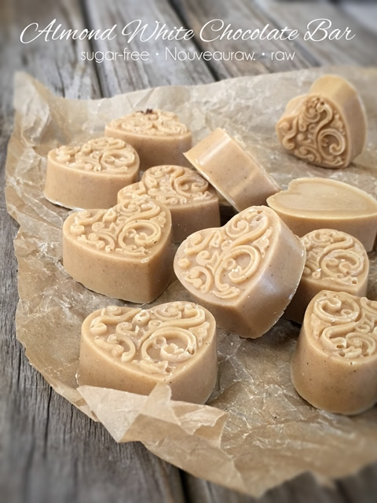
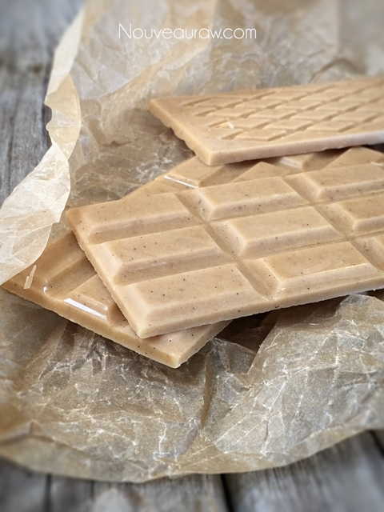

Sugar Free Almond White Chocolate Bar

~ high-raw, sugar-free, gluten-free, vegan ~
I am sure that most of you don’t need to be told how to enjoy chocolate, but I want to create a transcendent experience for you. That’s just the kind of gal that I am. :)
Put the chocolate in your mouth. You may chew it once or twice, but no more than three times. You are just wanting to break it up enough to melt smoothly and evenly. As the chocolate melts, start spreading it around in your mouth coating your tongue, roof, and sides of your mouth. Lightly and quickly smack your lips, to release aroma from your mouth to your nose.
How’s that for an experience? :) Not only do we need to learn to stop and smell the roses… we need to stop and savor the foods we put into our mouths. Well, that’s my story, and I’m sticking to it.
These chocolate candies were not tempered. If you want to learn how and why, please scroll down to the bottom where I provided a link that explains that process. Tempering creates a more stable, shiny, and snappy chocolate. But that’s not to say that these chocolates are not equally as good!
This recipe will hold up at room temperatures, but don’t put them in your pants pockets. Your body temperature could cause them to start to melt, and that could create a real mess. Just saying. :) I prefer to keep these in the freezer just to prolong their shelf-life. I don’t eat much chocolate, but it’s nice to have a piece every once in a while.
Please create these chocolates as is so you can learn how the recipe is supposed to taste and feel in texture. From there you can experiment with other ingredients or flavors if you feel adventurous. There is a bit of science behind chocolate making, so it’s best to follow directions until you get really comfortable with this culinary way of making chocolate.
I created this recipe for a reader who asked if I could create sugar-free chocolate that used Swerve, sugar replacement. You can read all about it (here). I hope you enjoy this recipe. Another wonderful option which I love to use is Markus Sweet. Many blessings and please keep in contact below. amie sue
Optional topping:
Preparation:
- Have the chocolate mold(s) ready and waiting. Make sure that they are clean and dry!
- If you are using a silicone pan, be sure to place it on a sturdy baking sheet for transporting to the freezer.
- Grate or break the raw cacao up into small chunks.
- Do not start the recipe with melted cacao butter. By doing so, the other ingredients will fall to the bottom of the pan, causing a separation.
- Place the cacao butter in a high-powdered blender. This recipe works best using the Vitamix with the tamper.
- Add the lucuma; powdered swerve, vanilla bean seeds, and salt.
- It is very important to use the confectioner sugar grade, otherwise, the chocolate will be grainy.
- Powder the salt too if it is a coarse grade.
- Start the blender on low and quickly take it too high.
- Use the tamper to push the ingredients into the blades.
- If a lot of chunks of ingredients are collecting on the sides of the blender carafe or on the tamper, stop the machine and scrape everything back into the center of the blender.
- Once the chocolate has turned to a smooth texture, be sure to check the temperature and using the blender to bring it to 107 degrees (F). Do not go above. I use (this) temperature gun to check the temp.
- Pour the chocolate into the molds, filling them all the way up to the top.
- Optional, spread crushed almonds over the chocolate to creates an almond base.
- Slide into the freezer or fridge to set. It can harden at room temp, but the process will speed up when chilled.
- Once solid, pop the chocolate out of the mold, put in an airtight container, and place in the freezer.
- Enjoy within 2-3 months. Sooner is always better than later. :)
The Institute of Culinary Ingredients™
- Time-saving tips on how to grate raw cacao butter.
- Another fun way to prepare cacao butter for melting or gift-giving. Click (here).
- What is cacao butter? Click (here) to learn more.
- Want to learn more about raw cacao products? Click (here). This page will continue to grow, so please keep checking back.

© AmieSue.com